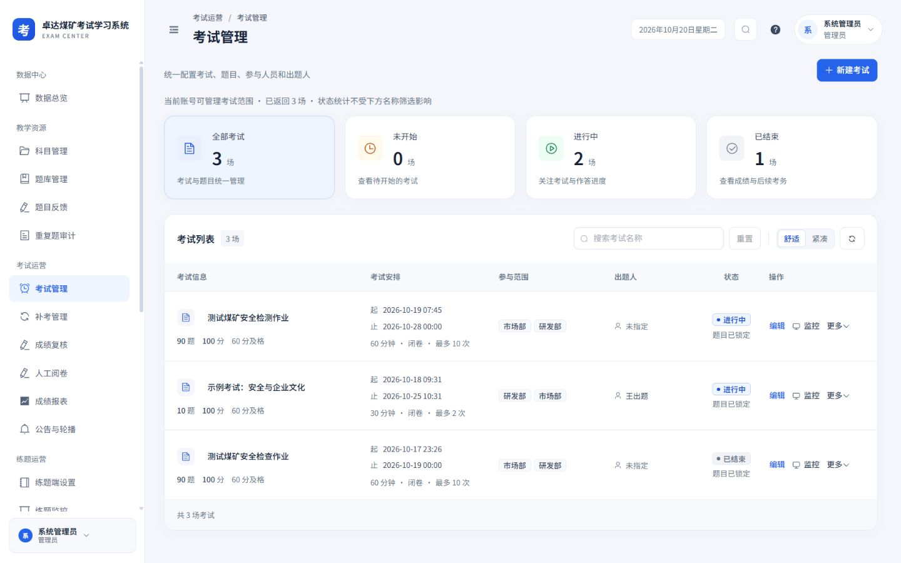
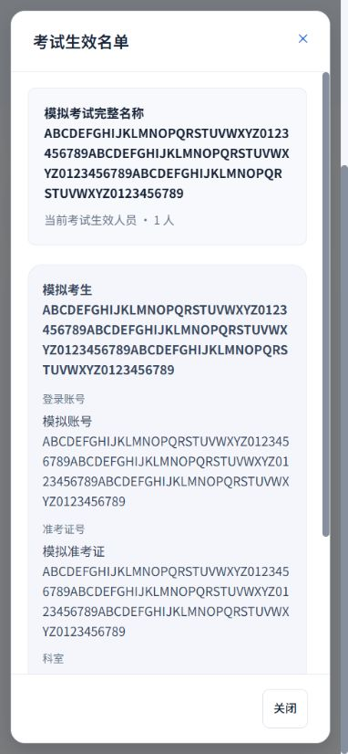
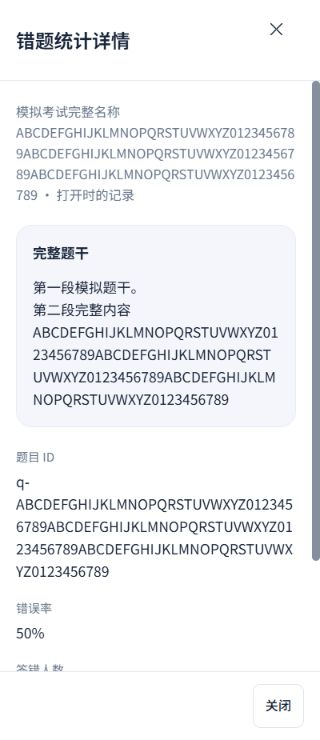
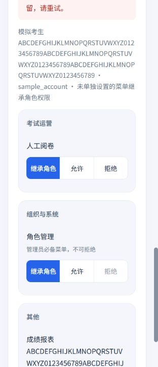
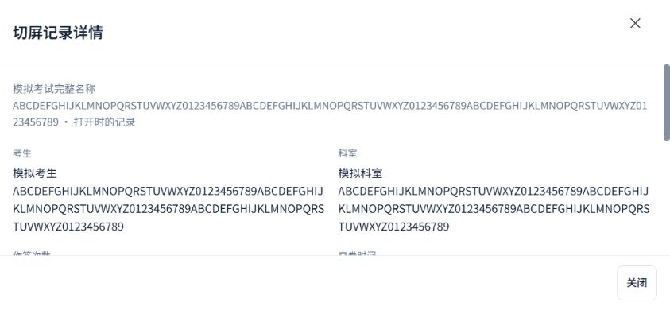

2026-10-20 · Workbuddy 01 · 本轮本地实施：考试管理、成绩报表、菜单权限
完整详情可阅读，统计范围可核对
延续白侧栏、浅灰蓝底、蓝色操作和16 px圆角卡片，补齐三页桌面、手机与详情设计；保留原有角色、题目读写权限、考务入口、锁题与切屏规则。
本轮落地
- 考试名称直接打开完整详情：开始结束、时长、方式、次数、题量、分值、出题人及权限内的参与范围完整显示，保留锁题原因。手机单列、底部操作两列44 px；作者仍受原维护权限限制，不显示管理员名单入口。
- 生效名单由宽表格改为人员卡片：完整姓名、账号、准考证、科室和来源无需悬停阅读。桌面两列、手机一列，加载与失败显示未知人数，保留重试和旧响应隔离。
- PDF生成期间阻止重复导出；失败在列表说明具体考试及版本，原入口可重试。删除确认开始即锁定重复操作，取消不删除，失败保留列表；业务接口与删除限制沿用原实现。
- 科室对比更正为“按人数前5项”，与接口实际范围一致；错题按真实错误率前5项展示，移除固定的高错误率判断。点击题干查看完整内容、ID、错误率及实际作答分母。
- 无出分样本的均分、及格率、最高最低分显示“—”，导出禁用；切屏及规则读取中或失败时不显示0异常或正常。姓名与科室对照失败提供重试，已有标识保留。
- 切屏姓名直接打开完整记录及原始事件卡片；展开行也使用同一时间线。保留原阈值、各次作答列表、已交卷审查范围与最多500条上限。
- 个人菜单例外采用分组卡片，默认明确选择继承角色；手机菜单名上置，三项等宽44 px，管理员必授菜单不可拒绝。任一保存期间锁定两类编辑及切换；失败保留草稿与就地重试提示。
实际应用
以下为本地实际应用及接口。仅查看、切换考试或用户、打开详情和名单，未保存权限、删除考试或修改考试与安全设置。当前实际报表所查看考试无出分样本；长错题和切屏记录在下方隔离样例验证。



长内容与失败恢复
以下使用实际页面组件和隔离模拟接口，均为模拟数据，不连接业务接口。保存与导出失败验证仅在模拟环境或自动化测试中执行。







验证结果
320×740、390×844、844×390与1440×900视口，共22组布局测量，页面未发现横向溢出。覆盖实际页面、考试详情与生效名单、长内容、错题与切屏详情、权限选项、报表加载失败及空状态。
8个相关测试文件、108项测试通过；类型检查、设计覆盖检查、生产构建和差异空白检查通过。测试覆盖保存锁定与失败草稿、用户响应竞态、管理员必授项、作者入口限制、名单读取恢复、取消删除、导出重复保护、报表真实范围、规则未知及零样本。
本报告对应本轮本地实现与验证范围；其余历史修改与验收记录保留。